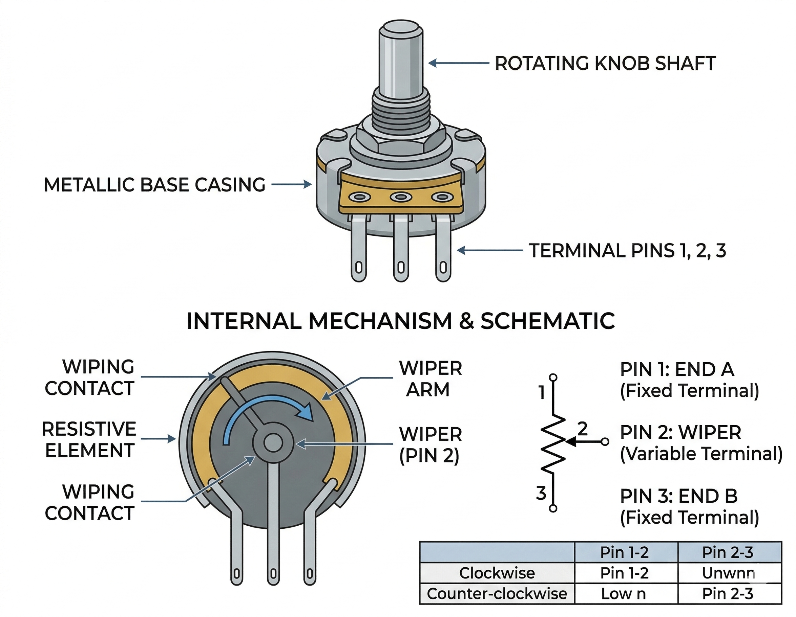

A Potentiometer (often called a "pot") is a three-terminal resistor with a sliding or rotating contact that forms an adjustable voltage divider. In electronics, it's typically used to control electrical devices such as volume controls on audio equipment.

Inside the metal casing is a circular track made of resistive material (like carbon).
| Pin | Function |
|---|---|
| Left (GND) | Common ground connection. (If swapped with VCC, the dial rotation mapping simply reverses). |
| Middle (SIG) | The analog output voltage. Connect to an Arduino Analog Pin (e.g., A0) to read the dial's position. |
| Right (VCC) | Power supply. Connect to Arduino 5V. |
During a running simulation, hover your mouse over the potentiometer dial. Click and drag smoothly in a circle (or slowly left/right) to rotate the knob. Your Arduino code will instantly detect the varying voltage!
Reading a potentiometer is the fundamental way to get analog input into a microcontroller.
int potPin = A0; // Analog pin connected to the potentiometer's middle pin
int val = 0; // Variable to store the read value
void setup() {
Serial.begin(9600);
}
void loop() {
// read the voltage on the analog pin
// (value will be between 0 and 1023)
val = analogRead(potPin);
Serial.print("Potentiometer Value: ");
Serial.println(val);
// Example: Map the value to control an LED's brightness
// int brightness = map(val, 0, 1023, 0, 255);
// analogWrite(9, brightness);
delay(100);
}